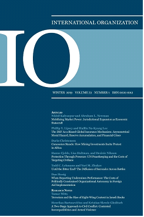

收录于合集

作品简介
【作者】 萨拉 珀西(Sarah V Percy)是昆士兰大学政治学副教授。
【编译】 胡贺（外交学院国际关系研究所）
【校对】 虞敷扬
【审读】 丁伟航
【排版】 杨洋
【来源】 ****
Percy, Sarah V.“Mercenaries:Strong norm, weak law.” International Organization 61.2 (2007): 367-397.
期刊介绍

《国际组织》（International Organization），简称“IO”，是一份经过同行评议的季刊，涵盖国际事务的各个领域。它成立于1947年，由剑桥大学出版社代表国际组织基金会出版。2017年的影响因子为4.517，在169种政治学类期刊中排名第2，在85种国际关系类期刊中排名第1。
萨拉·珀西
内容提要
作者以反对雇佣军的国际法为例，在文中主要研究在强规范影响下为什么会形成弱法律，同时探索在弱法律视角下社会规范与法律规范之间的关系。作者认为反雇佣军法之所以存在漏洞是国家利益导致国家制定较弱的法律。事实上，无效的反雇佣法是规范影响的结果。强规范导致法条虽然提出了雇佣军的定义，并将雇佣军与其他行为体区分开来，但正是由于法条严格遵循了反雇佣军规范，无法做出必要的调整从而导致不能创建有效的法律。在竞争规范的压力下，反雇佣军法进一步遭到破坏。在20世纪80年代，关于反雇佣军的规范就受到了另一个竞争规范的阻挠，即国家责任。国家责任规范与反对雇佣军规范的冲突导致《联合国公约》推迟制定。反对雇佣军弱国际法是由于强规范导致的结果。
作者在文中指出了社会规范和法律规范相互关系的四个点： 第一，国家制定国际法是出于法律本身而不是法律的功能和作用；
第二，对于规范而言，法律化、制度化对规范发展并不一定就是有益的； 第三，对于规范的强认同有时反而会导致制定弱法律；
第四，社会规范和法律规范相比，在某种程度上法律规范不见得更有效。
雇佣军被称为世界上第二古老的职业。在历史上，多数国家都有转向私人集团寻求军事服务的历史。直到今天，英国和美国等国非常依赖私人安保公司的支持和服务。有观点认为，国家并不担心雇佣军问题，因此故意制定了弱法以确保本国能够使用私人武力对抗那些无法向私人部门寻求军事服务的对手。国家接受反对雇佣军的规范，但自己保留使用雇佣军的权力。国家接受反雇佣军规范，以至于拒绝在立法过程中对其进行稀释或以任何方式对其进行调整，法律精确地反映了该规范，但法条具体表述上却存在漏洞。所以对于由强规范导致的弱法律的研究，可以为揭示社会规范与法律规范之间的关系提供一个窗口。反雇佣军法充满漏洞。两个普遍适用涉及雇佣军的国际法文件，即《日内瓦公约》第一附加议定书第47条6款和《反对招募，使用，资助和训练雇佣军国际公约》对雇佣军的定义实际上为法律的强制执行制造了障碍，使反雇佣军法律变成弱法，以至于“任何不能将自己排除在这种定义之外的雇佣军，为其辩护的律师都应该吃枪子”。本文主要探讨了强规范如何导致弱法律，同时指出弱法律也是未来研究的重要对象。
**
** 文章导读
一、 关于雇佣军弱法的解释 ****
反雇佣军的强规范导致弱法律有四种可能解释： 第一，在70-80年代，各国并不重视制定有效的法律，因为雇佣军没有引起足够的实际困难，也没有引起足够的道德关注和法律关注。本文的首要任务是证明各国确实关注雇佣军问题，并进行了多次尝试来控制雇佣军，这都是因为他们造成的实际问题，以及由于雇佣军本身规范的不足。第二，国家故意在雇佣军法中制造了漏洞。由于西方国家不关心这个问题，非洲国家得以制定法律来增强其权力。非洲国家已利用国际法保护自己免受雇佣军的侵害攻击，同时保留自己使用雇佣军的选择权，从而保留了相对于对手的优势。为了论证法律的制定受到反对雇佣军规范的影响，本文必须证明法律中的缺陷来自于遵守规范本身，而不是出于国家的自身利益试图制定弱法律。第三，受影响最严重的国家，主要是较弱的非洲国家需要制定国际法来处理雇佣军问题，而强大的西方国家对此并不感兴趣。为了证明事实上该法律是建立在反对雇佣军的强大规范基础之上的，西方国家和其他国家对反雇佣军规范上立场一致，认为需要制定法律控制雇佣军并积极推进相关法律的制定。第四，针对雇佣军的法律无效，因为它反映国家可以达成共识的最低点，而这种最低限度的协议导致了弱法律。本文通过事实证明，各国对需要控制雇佣军的承诺很强，正是由于承诺和协议的强度导致了反雇佣军弱法的出现。
二、 反雇佣军规范及其影响 **** ****
卡岑斯坦将规范定义为“集体期望”，即在给定身份中的行为者的适当行为。基欧汉认为规范是根据权利和义务定义的行为标准。反对雇佣军使用的规范源自普遍接受的雇佣军定义。雇佣军有两个普遍确定的组成部分：雇佣军是外国人，与当事国的任何一方都没有联系；他们参与战争的主要动机是经济收益。反对雇佣军规范源于以下观念，即雇佣军是出经济动机并在主权国家范围之外使用武力。首先，雇佣军处于国家控制之外，因此既对国家构成实际威胁，又对规范观念构成威胁，即违背了国家应垄断使用武力。其次，雇佣军是不为社会普遍认为的原因而进行斗争，雇佣军的动机是金钱收益，而不是爱国主义或意识形态。因此雇佣军是不道德的或危险的，或两者兼而有之。因此，反雇佣军规范是建立在雇佣军的定义之上。在此需要指出的有两点，第一，存在内在逻辑问题，它具有两个相关的组成部分：判定金钱动机和在国家控制之外使用武力。因此导致创建的法律定义非常复杂。第二，反雇佣军规范并不关注雇佣军本身国籍问题。有很多国外的战士并不是雇佣军。例如，联合国维和人员，以及被官方借调到另一个国家的士兵等等。雇佣兵是为金钱而战而不是为事业而战的。在伊拉克和阿富汗战争中大量使用私人安保公司的事实表明，反雇佣军规范已经受到侵蚀。造成侵蚀的部分原因可能是由于制定了反雇佣军的弱法律。反雇佣军法是无效的，意味着即使国家希望使用法律约束雇佣军，法律也永远无法被用来控制雇佣军。
三、 规范如何解释法律漏洞 ****
****法律的漏洞反映了以下事实： 反对雇佣军的规范具有很强的影响力，但不可能转化为法律上合理、有效的用语。
漏洞：并入国家武装部队第47条法条完整规定：1. 外国雇佣兵不应享有作为战斗人员或成为战俘的权利。2. 外国雇佣兵是具有下列情况的任何人： (a)在当地或外国特别征募以便在武装冲突中作战； (b)事实上直接参加敌对行动； (c)主要以获得私利的愿望为参加敌对行动的动机，并在事实上冲突一方允诺给予远超过对该方武装部队内具有类似等级和职责的战斗人员所允诺或付给的物质报偿； (d)既不是冲突一方的国民，又不是冲突一方所控制的领土的居民； (e)不是冲突一方武装部队的人员；而且 (f)不是非冲突一方的国家所派遣作为其武装部队人员执行官方职务的人。第47条的规定是累积性的，如果不符合其中任何一项条件，就不会被视为雇佣军。卡塞斯指出，针对第47条2款e项，国家只需通过将私人武装合并到自己的部队中来规避法律，同时使雇佣军中的个人免受法律的惩处。此项是最受诟病批评的一条。在该条款下，只有“最愚蠢或最不幸的人才会被判定为雇佣军。私人武装、雇佣军肯定会通过将其并入雇主的武装部队作为雇用条件来避免该条款的法律效力。作者认为2款e项是一项保护性工具，而不是法律漏洞。不是国家为确保他们保留自己使用雇佣军的权利，而是为了保护不被视为雇佣军私人武装的人员免受第47条的惩罚性死刑条款的约束。国家试图将他们不认为是雇佣军的行为者从雇佣军的定义中排除，因此插入了第2款e项以保护常驻在该国武装部队中的正规军士兵和外国士兵。下一步问题是：如何把那些为经济利益而战斗的士兵和雇佣军区分开来？在国际人道主义法外交会议的讨论上达成了一致即以雇佣军为职业或是职业杀手。将“属于冲突当事方武装部队成员的那些人从雇佣兵的法律类别中排除。实际上国家为士兵提供了保护就表明各国将其视为一种保护性手段而不是漏洞。外国人不是雇佣军的观念完全符合反雇佣军规范。反对雇佣军的规范认定雇佣军不受国家控制的事实并且出于经济动机进行作战。事实上，本国士兵与外国人并肩作战，甚至外国人作为指挥通常是通过同盟安排或在联合国维持和平行动期间出现的。例如，北大西洋公约组织在五角大楼工作的是外国士兵而不是雇佣军，这是由于他们是国家部队的一员，并且不是为专门争取经济利益而参加战斗。如果没有2款e项的保护，长期雇用的正规军和外国人都有丧失相关权利能被归为雇佣军的风险。对第47条所采用的雇佣军的定义和后来在《联合国公约》中采用的类似定义都严重依赖个人动机。负责制定第47条的外交会议工作组认为雇佣军是指在本质上或主要是出于对金钱的渴望而参加战斗的人。此定义反映了反雇佣军规范：雇佣军令人反感，因为他们不是由于适当的原因所驱动，而是由于金钱上的利益驱动参加战斗。将雇佣军对于金钱的动机转变为可行的法律文件充满了障碍。判定对于金钱的动机是极为困难的，或者在最坏的情况下，根本无法证明。在外交会议上制定第47条草案的工作组预见到判定一个人的动机可能会带来一些举证问题。公约第47条与国际人道主义法中的规定不相称。第47条与第一附加议定书其余部分的不相容性进一步证明了反雇佣军规范的影响。第47条与第一附加议定书其余部分基本主旨相悖，该主旨指出不应在任何情况下歧视任何参战人员的动机，使国际人道主义法应具有普遍性。对于雇佣军的国际法律规定可能走了两条不同的路径。第一条路径将是利用现有的国际法来规范雇佣军的行为。通过这种方法，雇佣军将因其所作所为而不是其行动本身动机受到惩罚。第二条路径（第47条最终采用的方法）是根据判定雇佣军的身份对其进行监管。这种方法需要清楚的将雇佣军与其他人员区分开来。论证行为动机，并举证。因此引发了一个问题，即为什么国家采取效率较低的途径？答案只能是，作为雇佣军的事实令人反感，雇佣军受到法律的惩罚仅仅是因为其雇佣军的身份。对于动机的论证导致法律在实际操作过程中举证困难，甚至成为无效法律。
四、 被另一规范所破坏的反雇佣军规范 ****
**
**
****关于反雇佣军弱法点的另一种解释是，要使法律有效，就必须得到强大国家的支持。 反雇佣法的创立很大程度上是由非洲国家带头，而西方国家显然忽视这个问题。这可以为上面的论点提供论据。但是，西方国家与非西方国家之间的争论并不在于是否应该控制雇佣军，而是如何控制雇佣军。西方国家很难同意一些拟议的机制来解决雇佣军问题，因为这些机制违反了现有的规范，因此，《联合国公约》的制定花费了将近十年的时间，到敲定之时，法条已基本上变得毫无意义：雇佣军主要的形式是由私人安保公司提供的，而不是由单个雇佣军的形式存在。尽管西方国家同意雇佣军需要控制，但他们不同意提议的控制机制。在《公约》创立期间就产生了最重要的问题即国家责任问题。国家在多大程度上应为其公民个人行为而被追究其责任，这在特设《公约》委员会的审议过程中成为症结所在，引起了两种回应。特设委员会中的大多数非西方国家都同意，国家必须对公民的行为负责，以使法律得以发挥作用。这些国家认为，与雇佣军有关的有两项犯罪：第一，雇佣军身份、状态，第二国家对雇佣军行动的支持，包括国家未能控制雇佣军问题。在特设委员会中，西方国家认为不应将第二项纳入联合国公约。国际法中仅在特定情况下追究绝对国家责任：在涉及核装置，核动力船和由空间物体造成的损害的多边条约中。对于处理有重大国际后果（例如爆炸）的特殊情况，才能追究国家的绝对责任。委员会认为“不代表国家行事的私人行为不能归因于国家，也不能追究国家的责任”，并且该规则“满足当代国际生活的需要，不需要改变。”西方国家从一开始就明确指出，将绝对国家责任纳入《联合国公约》就不会签署公约。对西方国家而言，尤其在责任问题上，西方国家尽量避免负面的法律后果。一些西方国家尽管从未使用过雇佣兵，在《联合国公约》制定过程中，仍坚持认为对于雇佣军问题，不应追究国家责任。西方国家和非西方国家都同意应该控制雇佣军问题，但提议采取的方式有所不同。在寻求实施禁止雇佣军的规范时，西方国家试图保护国家责任规范阻止了公约关于追究国家责任的规定。西方国家普遍同意这些长期存在的规范。这表明在制定《联合国公约》期间两方国家之间的分歧是规范之间的冲突，而不是由不同利益所引起的冲突。如涉及反雇佣军的国际法被另一个普遍接受的规范所破坏，可以得出结论，有些国家一定认为反对雇佣军的规范不如国家责任规范重要。这又引发了一个问题，即国家如何权衡规范的重要性？如果西方国家认为国家责任规范比反对雇佣军规范更为重要，这是否表明后者微不足道？在这种特殊情况下，国际法中相对未纳入的规范即反雇佣军规范与纳入规范相比，破坏已被接受的规范更加困难。国家责任是一项基本的规范，依靠国家责任修补并制定反雇佣军法将破坏整个国际法体系。必须强调的是，解决方案应与现有国内法和国际法相统一。在不威胁这一规范的情况下控制雇佣军。规范的冲突并不表示反雇佣军规范是不重要的。
五、 社会规范和法律规范 ****
强大的反对雇佣军的社会规范并没有产生同样的强法，这一事实不仅表明弱法并不总是代表规范失败，而且还表明了社会规范与法律规范之间关系的一些重要特征。就社会规范在法律制度化的过程表明了四点值得探讨的问题。首先，国家常常主张追求法律是由于法律本身而不是由于法律的作用。其次，规范制度化后，以法律形式固定下来对增强规范效果、促进规范发展并不总是产生积极效果。第三，对创建规范的坚定承诺并不一定对该规范的推广带来不容置疑的好处。第四，反对雇佣军的强规范与反雇佣军弱法之间的关系引发了法律规范和社会规范之间相互差异的问题。
六、 结 论
含有法律漏洞的反雇佣军法为分析社会规范与法律规范之间的关系提供了一个绝佳的机会，也提供了分析社会规范如何成为法律的过程路径。有关反雇佣军法也推翻了传统的观点。弱法很容易就被忽视并且认为是失败的。探究弱法律的原因可以认识到规范与法律之间没有明确的关系；转变成为法律规范时，之前的社会规范并不一定会变得更强或更加有效。学者更倾向于研究强法律，因为它更好地表明了规范可以影响国家行为。反雇佣军法表明，弱法的研究可能也对国际关系研究大有裨益。 _ ** _ ** _ ** _ 本文由国政学人独家编译推荐**__
扫下方二维码查看往期精彩
【新刊速递】第01期 | Review of International Studies Vol.45, No.4, 2019
【新刊速递】第02期 | International Relations Vol.33, No.3, 2019
【新刊速递】第03期 | International Organization Vol.73, No.3, 2019
【新刊速递】第04期 | World Politics, Vol.71, No.4, 2019
【新刊速递】第05期 | European Journal of International Relations
【新刊速递】第06期 | Security Studies, Vol.28, No.4, 2019
【新刊速递】第07期 | International Secur.ity, Vol 44, No. 2, 2019
【新刊速递】第08期 | Cambridge Review of International Affairs,Vol.32,No.4
分类导览 1
分类导览 2

点“在看”给我一朵小黄花